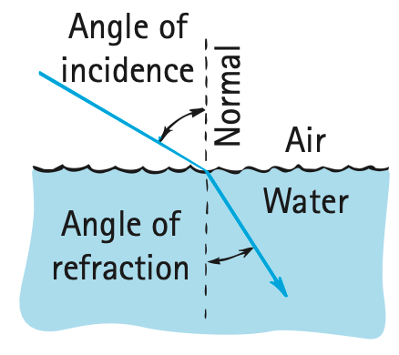
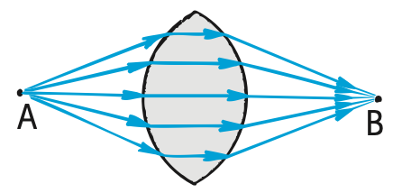
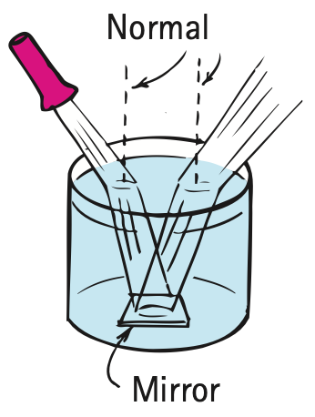
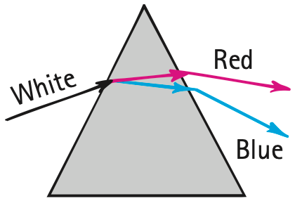
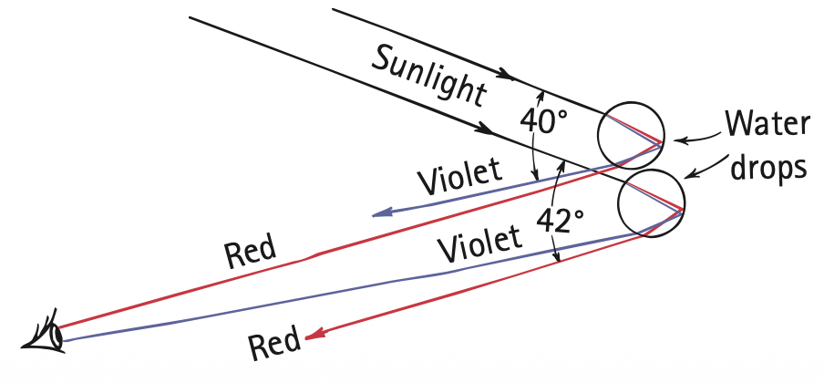
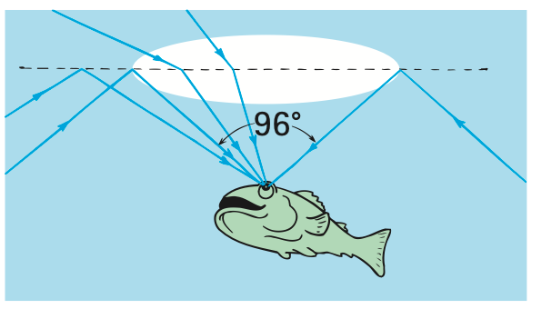

Refraction
Refraction
Recall from Chapter 26 that the average speed of light is lower through glass and other transparent materials than through empty space. Light travels at different speeds in different materials. It travels at 300,000 km/s in a vacuum, at a slightly lower speed in air, and at about three-fourths that speed in water. In a diamond, light travels at about 40% of its speed in a vacuum. When light bends in passing obliquely from one medium to another, we call the process refraction. It is a common observation that a ray of light bends and takes a longer path when it encounters glass or water at an oblique angle. But the longer path taken is nonetheless the path that requires the least time. A straight-line path would take a longer time. We can illustrate this with the following situation.

Imagine that you are a lifeguard at a beach and you spot a person in distress in the water. We show the relative positions of you, the shoreline, and the person in distress in Figure 28.13. You are at point A, and the person is at point B. You can run faster than you can swim. Should you travel in a straight line to get to B? A little thought will show that a straight-line path would not be the best choice because, if you instead spent a little bit more time traveling farther on land, you would save a lot more time in swimming a shorter distance in the water. The path of least time is shown by the dashed line, which clearly is not the path of the shortest distance. The amount of bending at the shoreline depends, of course, on how much faster you can run than swim. The situation is similar for a ray of light incident upon a body of water, as shown in Figure 28.14. The angle of incidence is larger than the angle of refraction by an amount that depends on the relative speeds of light in air and in water.

Consider the pane of thick window glass in Figure 28.15. When light goes from point A through the glass to point B, it will go in a straight-line path. In this case, light encounters the glass perpendicularly, and we see that the shortest distance through both air and glass corresponds to the shortest time. But what about light that goes from point A to point C? Will it travel in the straight-line path shown by the dashed line? The answer is no, because if it did so it would be spending more time inside the glass, where light travels more slowly than in air. The light will instead take a less-inclined path through the glass. The time saved by taking the resulting shorter path through the glass more than compensates for the added time required to travel the slightly longer path through the air. The overall path is the path of least time—the quickest path. The result is a parallel displacement of the light beam because the angles in and out are the same. You’ll notice this displacement when you look through a thick pane of glass at an angle. The more your angle of viewing differs from perpendicular, the more pronounced the displacement.

Another example of interest is the prism, in which opposite faces of the glass are not parallel (Figure 28.16). Light that goes from point A to point B will not follow the straight-line path shown by the dashed line because too much time would be spent in the glass. Instead, the light will follow the path shown by the solid line—a path that is a bit longer through the air—and pass through a thinner section of the glass to make its trip to point B. By this reasoning, one might think that the light should take a path closer to the upper vertex of the prism and seek the minimum thickness of glass. But if it did, the extra distance through the air would result in an overall longer time of travel. The quickest path followed is the path of least time.



It is interesting to note that a “properly curved prism” will provide many paths of equal time from a point A on one side to a point B on the opposite side (Figure 28.17). The curve decreases the thickness of the glass correctly to compensate for the extra distances light travels to points higher on the surface. For appropriate positions of A and B and for the appropriate curve on the surfaces of this modified prism, all light paths are of exactly equal time. In this case, all the light from A that is incident on the glass surface is focused on point B. We see that this shape is simply the upper half of a converging lens (Figure 28.18, and treated in more detail later in this chapter).
Whenever we watch a sunset, we see the Sun for several minutes after it has sunk below the horizon. Earth’s atmosphere is thin at the top and dense at the bottom. Since light travels faster in thin air than it does in dense air, light from the Sun can reach us more quickly if, instead of traveling in a straight line, it avoids the denser air by taking a higher and longer path to penetrate the atmosphere at a steeper tilt (Figure 28.19). Since the density of the atmosphere changes gradually, the light path bends gradually to produce a curved path. Interestingly, this path of least time provides us with a slightly longer period of daylight than if the light traveled without bending. Furthermore, when the Sun (or Moon) is near the horizon, the rays from the lower edge are bent more than the rays from the upper edge. This produces a shortening of the vertical diameter, causing the Sun to appear pumpkin shaped (Figure 28.20).

Figure 28.20 was omitted because no matching captured image was supplied.
Index of Refraction
Light slows when it enters a transparent medium. How much the speed of light differs from its speed in a vacuum is given by the index of refraction, n, of the material:
n = speed of light in vacuum / speed of light in material
For example, the speed of light in a diamond is 124,000 km/s, so the index of refraction for diamond is
n = 300,000 km/s / 124,000 km/s = 2.42
For a vacuum, n = 1.
For optical crown glass, common in eyeglasses, n is 1.52, which means light slows from speed c in air to speed c/n = c/1.52 = 0.66c. The greater the n, the greater the bending of light in the lens, which translates into less lens thickness. The n of high-index plastic lenses reaches 1.76, so light slows more and bends more, and lenses can be made thinner—good news for nearsighted people who want thinner eyeglasses. And what about the speed of light when it exits a lens? That’s right—back up to nearly c, light’s usual speed in air.
The quantitative law of refraction, called Snell’s law, is credited to W. Snell, a 17th-century Dutch astronomer and mathematician:
n1 sin θ1 = n2 sin θ2
where n1 and n2 are the indices of refraction of the media on either side of the surface and θ1 and θ2 are the respective angles of incidence and refraction. If three of these values are known, the fourth can be calculated from this relationship. Perhaps in the lab part of your course you’ll make use of Snell’s law.

Mirage
We are all familiar with the mirage we sometimes see while driving on a hot road. The distant road appears to be wet, but when we get there, the road is dry. Why is this so? The air is very hot just above the road surface and cooler above. Light travels faster through the thinner hot air than through the denser cool air above. So light, instead of coming to us from the sky in straight lines, also has least-time paths by which it curves down into the hotter region near the road for a while before it reaches our eyes (Figure 28.22). Where we are seeing “wetness,” we are really seeing the sky. A mirage is not, as many people mistakenly believe, a “trick of the mind.” A mirage is formed by real light and can be photographed, as shown in Figure 28.23.

Figure 28.23 was omitted because no matching captured image was supplied.
When we look at an object over a hot stove or over hot pavement, we see a wavy, shimmering effect. This is due to the various least-time paths of light as it passes through varying temperatures and therefore varying densities of air. The twinkling of stars results from similar phenomena in the sky, where light passes through unstable layers in the atmosphere.
In the foregoing examples, how does light seemingly “know” what conditions exist and what compensations a least-time path requires? When approaching window glass, a prism, or a lens at an angle, how does light know to travel a bit farther in air to save time in taking a shorter path through the glass? How does light from the Sun know to travel above the atmosphere an extra distance before taking a shortcut through the denser air to save time? How does sky light above know that it can reach us in minimum time if it dips toward a hot road before tilting upward to our eyes? The principle of least time appears to be noncausal that light has a mind of its own and can “sense” all the possible paths, calculate the time for each, and choose the one that requires the least time. Is this the case? As intriguing as all this may seem, there is a simpler explanation that doesn’t assign foresight to light: Refraction is simply a consequence of light having different average speeds in different media.
Cause of Refraction
Cause of Refraction
Refraction occurs when the average speed of light changes in going from one transparent medium to another. We can understand this by considering the action of a pair of toy cart wheels connected to an axle as the wheels roll gently downhill from a smooth sidewalk onto a grass lawn. If the wheels meet the grass at an angle, as Figure 28.23 shows, they are deflected from their straight-line course. Note that the left wheel slows first when it interacts with the grass on the lawn. The higher-speed right wheel on the sidewalk then pivots about the slower-moving left wheel. The direction of the rolling wheels is bent toward the normal (the black dashed line perpendicular to the grass-sidewalk border in Figure 28.24).

A light wave bends in a similar way, as shown in Figure 28.25. Note the direction of light, indicated by the blue arrow (the light ray), and also note the wavefronts (red) drawn at right angles to the ray. (Recall that a wavefront is the crest, trough, or any continuous portion of a wave.) In the figure the wave meets the water surface at an angle. This means that the left portion of the wave slows down in the water while the remainder in the air travels at speed c. The light ray remains perpendicular to the wavefront and therefore bends at the surface. It bends like the wheels bend when they roll from the sidewalk into the grass. In both cases, the bending is a consequence of a change in speed.

The changeable speed of light provides a wave explanation for mirages. Sample wavefronts coming from the top of a tree on a hot day are shown in Figure 28.26. If the temperature of the air were uniform, the average speed of light would be the same in all parts of the air; light traveling toward the ground would meet the ground. But the air is warmer and less dense near the ground, and the wavefronts gain speed as they travel downward, making them bend upward. So, when the observer looks downward, he sees the top of the tree—this is a mirage.

Refraction accounts for many illusions. A common one is the apparent bending of a stick that is partially in water. The submerged part seems closer to the surface than it really is. Likewise when you view a fish in the water, the fish appears nearer to the surface and closer than it really is (Figure 28.28). If we look straight down into water, an object submerged 4 m beneath the surface will appear to be only 3 m deep. Because of refraction, submerged objects appear to be closer, so they seem bigger.


We see that we can interpret the bending of light at the surface of the water in at least two ways. We can say that the light that leaves the fish and reaches the observer’s eye does so in the least time by taking a shorter path upward toward the surface of the water and a correspondingly longer path through the air. In this view, least time dictates the path taken. Or we can say that the waves of light directed upward at an angle toward the surface are bent off-kilter as they speed up when emerging into the air reaching the observer’s eye. In this view, the change in speed from water to air dictates the path taken, and this path turns out to be a least-time path. Whichever view we choose, the results are the same.

Dispersion and Rainbows
Dispersion and Rainbows
We know that the average speed of light is less than c in a transparent medium; how much less depends on the nature of the medium and on the frequency of light. The speed of light in a transparent medium depends on its frequency. Recall from Chapter 26 that light with frequencies that match the natural or resonant frequencies of the electron oscillators in the atoms and molecules of the transparent medium is absorbed, and light with frequencies near the resonant frequencies is not absorbed but interacts more often than light of lower frequencies in the absorption–reemission sequence. Since the natural or resonant frequency of most transparent materials is in the ultraviolet part of the spectrum, higher-frequency light travels more slowly than lower-frequency light. Violet light travels about 1% slower in ordinary glass than red light. Light waves with colors between red and violet travel at their own intermediate speeds.
Because light of different frequencies travels at different speeds in transparent materials, it refracts by different amounts. When white light is refracted twice, as in a prism, the separation of the different colors of light is quite noticeable. This separation of light into colors arranged according to frequency is called dispersion (Figure 28.30). It is what enabled Isaac Newton to form a spectrum when he held a glass prism in sunlight.

A most spectacular illustration of dispersion is a rainbow. For a rainbow to be seen, the Sun must be shining in one part of the sky and water drops in a cloud or in falling rain must be present in the opposite part of the sky. When we turn our backs toward the Sun, we see the spectrum of colors in a bow. Seen from an airplane near midday, the bow forms a complete circle (with the shadow of a low-flying airplane seen in the center). All rainbows would be completely round if the ground were not in the way.
The beautiful colors of rainbows are dispersed from the sunlight by millions of tiny spherical water droplets that act like prisms. We can better understand this by considering an individual raindrop, as shown in Figure 28.31. Follow the ray of sunlight as it enters the drop near its top surface. Some of the light here is reflected (not shown), and the remainder is refracted into the water. At this first refraction, the light is dispersed into its spectrum colors, violet being deviated the most and red the least. Reaching the opposite side of the drop, each color is partly refracted out into the air (not shown) and partly reflected back into the water. Arriving at the lower surface of the drop, each color is again reflected (not shown) and refracted into the air. This second refraction is similar to that of a prism, where refraction at the second surface increases the dispersion already produced at the first surface.

Two refractions and a reflection can actually result in the angle between the incoming and outgoing rays being anything between 0° and about 42° (0° corresponds to a full 180° reversal of the light). There is a strong concentration of light intensity, however, near the maximum angle of 42°. That is what is shown in Figure 28.31.
Although each drop disperses a full spectrum of colors, an observer is in a position to see the concentrated light of only a single color from any one drop (Figure 28.32). If violet light from a single drop reaches the eye of an observer, red light from the same drop is incident elsewhere below the eyes. To see red light, one must look to a drop higher in the sky. The color red will be seen when the angle between a beam of sunlight and the light sent back by a drop is 42°. The color violet is seen when the angle between the sunbeams and deflected light is 40°.

Why does the light dispersed by the raindrops form a bow? The answer to this involves a little geometric reasoning. First of all, a rainbow is not the flat two-dimensional arc it appears to be. It appears flat for the same reason a spherical burst of fireworks high in the sky appears as a disc—because of a lack of distance cues. The rainbow you see is actually a three-dimensional cone with the tip (apex) at your eye (Figure 28.33). Consider a glass cone, the shape of those paper cones you sometimes see at drinking fountains. If you held the tip of such a glass cone against your eye, what would you see? You’d see the glass as a circle. Likewise with a rainbow. All the drops that disperse the rainbow’s light toward you lie in the shape of a cone—a cone of different layers with drops that disperse red to your eye on the outside, orange beneath the red, yellow beneath the orange, and so on, all the way to violet on the inner conical surface. The thicker the region containing water drops, the thicker the conical edge you look through, and the more vivid the rainbow.

To further understand this, consider only the deflection of red light. You see red when the angle between the incident rays of sunlight and dispersed rays is 42°. Of course, beams are dispersed 42° from drops all over the sky in all directions—up, down, and sideways. But the only red light you see is from drops that lie on a cone with a side-to-axis angle of 42°. Your eye is at the apex of this cone, as shown in Figure 28.34. To see violet, you look 40° from the conical axis (so the thickness of glass in the cone of the preceding paragraph is tapered—very thin at the tip and thicker with increased distance from the tip). Your cone of vision that intersects the cloud of drops that creates your rainbow is different from that of a person next to you. So when a friend says, “Look at the pretty rainbow,” you can reply, “Okay, move aside so I can see it too.” Everybody sees his or her own personal rainbow.

Another fact about rainbows: A rainbow always faces you squarely because of the lack of distance cues mentioned earlier. When you move, your rainbow moves with you. So you can never approach the side of a rainbow, or see it nearly end-on as in the exaggerated view of Figure 28.33. You can’t get to its end. Therefore the expression “looking for the pot of gold at the end of the rainbow” means pursuing something you can never reach.
Often a larger secondary bow with colors reversed can be seen arching at a larger angle around the primary bow. We won’t treat this secondary bow except to say that it is formed by similar circumstances and is a result of double reflection within the raindrops (Figure 28.36). Because of this extra reflection (and extra refraction loss), the secondary bow is much dimmer and its colors are reversed.
Figure 28.35 was omitted because no matching captured image was supplied.

Total Internal Reflection
Total Internal Reflection
Some Saturday night when you’re taking your bath, fill the tub extra deep and bring a waterproof flashlight into the tub with you. Switch off the bathroom light. Shine the submerged light straight up and then slowly tip it away from the surface. Note how the intensity of the emerging beam diminishes and how more light is reflected from the surface of the water to the bottom of the tub. At a certain angle, called the critical angle, you’ll notice that the beam no longer emerges into the air above the surface. The intensity of the emerging beam reduces to zero where it tends to graze the surface. The critical angle is the minimum angle of incidence inside a medium at which a light ray is totally reflected. When the flashlight is tipped beyond the critical angle (48° from the normal for water), you’ll notice that all the light is reflected back into the tub. This is total internal reflection. The light striking the air–water surface obeys the law of reflection: The angle of incidence is equal to the angle of reflection. The only light emerging from the surface of the water is the light that is diffusely reflected from the bottom of the bathtub. This procedure is shown in Figure 28.37. The proportions of light refracted and light internally reflected are indicated by the relative lengths of the arrows.

Total internal reflection occurs in materials in which the speed of light is less than the speed of light outside. The speed of light is less in water than in air, so all light rays in water that reach the surface at more than an incident angle of 48° are reflected back into the water. So your pet goldfish in its aquarium looks up to see a reflected view of the sides and bottom of the aquarium. Directly above, it sees a compressed view of the outside world (Figure 28.38). The outside 180° view from horizon to opposite horizon is seen through an angle of 96°—twice the critical angle. A lens that similarly compresses a wide view, called a fisheye lens, is used for special-effect photography.

Total internal reflection occurs in glass surrounded by air because the speed of light in glass is lower than in air. The critical angle for glass is about 43° depending on the type of glass. So light in the glass that is incident at angles larger than 43° to the surface is totally internally reflected. No light escapes beyond this angle; instead, all of it is reflected back into the glass, even if the outside surface is marred by dirt or dust—hence the usefulness of glass prisms (Figure 28.39). A little light is lost by reflection before it enters the prism, but once the light is inside, reflection from the 45° slanted face is total—100%. In contrast, silvered or aluminized mirrors reflect only about 90% of incident light. This is the reason for the use of prisms instead of mirrors in many optical instruments.

A pair of prisms, each reflecting light through 180°, is shown in Figure 28.40. Binoculars use pairs of prisms to lengthen the light path between lenses and thus eliminate the need for long barrels. So a compact set of binoculars is as effective as a longer telescope. Another advantage of prisms is that whereas the image in a straight telescope is upside down, reflection by the prisms in binoculars reinverts the image, so things are seen right-side up.

The critical angle for a diamond is about 24.5°, smaller than for any other common substance. The critical angle varies slightly for different colors because the speed of light varies slightly for different colors. Once light enters a diamond gemstone, most is incident on the sloped backsides at angles larger than 24.5° and is totally internally reflected (Figure 28.41). Because of the great slowdown in speed as light enters a diamond, refraction is pronounced, and because of the frequency-dependence of the speed, there is great dispersion. Further dispersion occurs as the light exits through the many facets at its face. Hence we see unexpected flashes of a wide array of colors. Interestingly, when these flashes are narrow enough to be seen by only one eye at a time, the diamond “sparkles.”

Total internal reflection also underlies the operation of optical fibers, or light pipes (Figure 28.42). An optical fiber “pipes” light from one place to another by a series of total internal reflections, much as a bullet ricochets down a steel pipe. Light rays bounce along the inner walls, following the twists and turns of the fiber. Bundles of optical fibers are used to see what is going on in inaccessible places, such as the interior of a motor or a patient’s stomach. The fibers can be made small enough to snake through blood vessels or through narrow canals in the body, such as the urethra. Light shines down some of the fibers to illuminate the scene and is reflected back along others.

Fiber-optic cables are also important in communications because they offer a practical alternative to copper wires and cables. Thin glass fibers now replace thick, bulky, expensive copper cables to carry thousands of simultaneous telephone messages among the major switching centers and across the ocean floor. Control signals are fed in aircraft from the pilot to the control surfaces by means of fiber optics. Signals are carried in the modulations of laser light. Unlike electricity, light is indifferent to temperature and fluctuations in surrounding magnetic fields, and so the signal is clearer. Also, it is much less likely to be tapped by eavesdroppers.
Textbook Sections: 28.3–28.6
Learning Target: Students will explain refraction as bending caused by changes in light speed and use this idea to analyze optical illusions, dispersion, rainbows, and total internal reflection.
- I can explain that light bends when it changes speed entering a different medium at an angle.
- I can predict whether light bends toward or away from the normal.
- I can explain why objects can appear shifted or bent in water.
- I can explain dispersion as separation of colors caused by different amounts of refraction.
- I can describe total internal reflection and the conditions needed for it.
- I can connect total internal reflection to optical fibers and other applications.